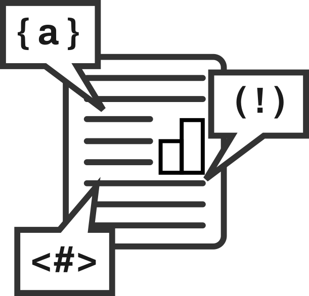
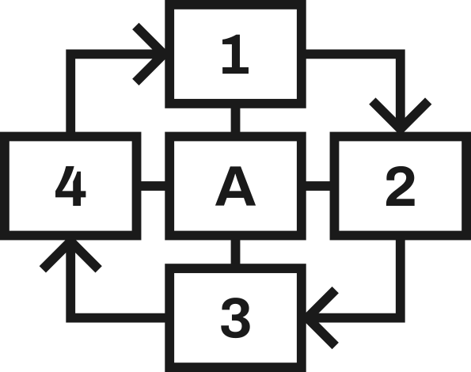
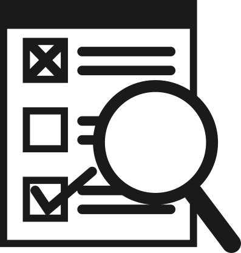

¿Que es el SIE-LP?
El Sistema Integral de Evaluación para Lenguajes de Programación (SIE-LP) es un proyecto que evalúa el nivel de conocimiento en un lenguaje de programación que posee una persona, agrupando los conocimientos dentro de un marco estandarizado de niveles, con la finalidad de identificar de forma más precisa el nivel de conocimientos que posee una persona en determinado lenguaje.
Que no es el SIE-LP:
El SIE-LP no es un sistema para evaluar el nivel de senior que posee un programador, ya que esto depende de muchos otros factores y no solo del nivel de conocimiento que este tenga en un lenguaje. Un programador senior puede obtener un nivel de conocimiento bajo en un idioma en el cual tiene poca experiencia, y de la misma forma un junior podría alcanzar un nivel de conocimientos alto si ha dedicado un buen tiempo a estudiar. Diferentes personas poseen diferentes niveles de conocimiento en diferentes lenguajes, por lo que usar este sistema no sería una buena forma de saber si son buenos programadores o no.
¿Es necesario un marco comun?
La respuesta corta es sí. Actualmente es muy difícil medir el nivel de conocimiento que cada uno posee en cada uno de los lenguajes que conoce. Preguntas como: ¿Cuál es mi o su nivel de conocimientos en este lenguaje? ¿Qué me falta por aprender o en qué debería enfocarme? ¿Cuál es el nivel actual de mis alumnos? ¿Qué nivel de profundidad abarca este libro o curso? Todas estas preguntas serían más fáciles de responder si tuviéramos un sistema común para poder comparar nuestro nivel de conocimiento.
¿Cómo evalua el SIE-LP?
A partir de una serie de competencias, las cuales se distribuyen en 3 niveles [short, integrated, extended], fue pensado así para funcionar como símil de [básico, medio y avanzado] para que lo pudieran entender programadores principiantes e incluso personas no relacionadas al área. Cada uno de estos se divide en 2 subniveles (1 y 2), formando así un grupo de 6 [S1, S2, I1, I2, E1, E2], siendo el S1 el nivel más bajo de conocimiento y el nivel E2 el más alto.
¿Cual es mi nivel en el SIE-LP?
Para saber tu nivel de conocimientos en un lenguaje, debes revisar la tabla de referencia por competencia y verificar con cuál de ellas cumples. Si posees una o todas las competencias de un nivel, entonces te encuentras en ese nivel. En la parte de abajo de las tablas se incluye una explicación y ejemplos. También puedes revisar la tabla de referencia para tu lenguaje y así tener información más precisa sobre qué habilidades específicas te hacen falta.
¿Como se definen los niveles?
Al crear los niveles, tomamos muy en cuenta nuestras limitaciones, las diferencias entre los diferentes lenguajes y la evolución que estos pueden llegar a tener. Por eso decidimos que los niveles debían ser lo más generales posibles, además de dinámicos y adaptables. Para lograrlo, nos basamos en los comentarios de los programadores que usan el sistema y en la estadística para evaluar, corregir y adaptar cada parte del modelo
¿Qué institucion lo respalda?
Actualmente, el proyecto es sostenido por una sola persona que revisa cada uno de los cambios y comentarios que envían, pero esperamos que pronto una universidad o institución pueda tomar el proyecto para mejorar su calidad.